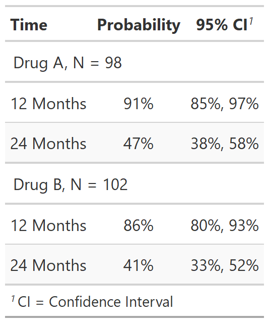
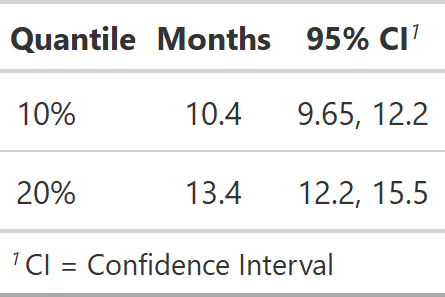

| tbl_survival.survfit {gtsummary} | R Documentation |
Questioning whether gtsummary is the place for our univariate survival
functions to live. This may be exported to another package in the future.
Function takes a survfit object as an argument, and provides a
formatted summary of the results
## S3 method for class 'survfit'
tbl_survival(
x,
times = NULL,
probs = NULL,
label = ifelse(is.null(probs), "{time}", "{prob*100}%"),
level_label = "{level}, N = {n}",
header_label = NULL,
header_estimate = NULL,
failure = FALSE,
missing = "-",
estimate_fun = NULL,
...
)
x |
A survfit object with a no stratification
(e.g. |
times |
Numeric vector of times for which to return survival probabilities. |
probs |
Numeric vector of probabilities with values in (0,1) specifying the survival quantiles to return |
label |
String defining the label shown for the time or prob column.
Default is |
level_label |
Used when survival results are stratified.
It is a string defining the label shown. The input uses
glue::glue notation to convert the string into a label.
The default is |
header_label |
String to be displayed as column header.
Default is |
header_estimate |
String to be displayed as column header of the Kaplan-Meier
estimate. Default is |
failure |
Calculate failure probabilities rather than survival probabilities.
Default is |
missing |
String indicating what to replace missing confidence
limits with in output. Default is |
estimate_fun |
Function used to format the estimate and confidence
limits. The default is |
... |
Not used |
A tbl_survival object
The level_label is used to modify the stratum labels. The default is
level_label = "{level}, N = {n}". The quantities in the curly
brackets evaluate to stratum-specific values. For example, in the trial
data set, there is a column called trt with levels 'Drug A' and 'Drug B'.
In this example, {level} would evaluate to either 'Drug A' or 'Drug B'
depending on the stratum. Other quantities available to print are:
{level} level of the stratification variable
{level_label} label of level for the stratification variable
{n} number of observations, or number within stratum
{n.event.tot} total number of events (total across stratum, if applicable)
{n.event.strata} total number of events within stratum, if applicable
{strata} raw stratum specification from survfit object
Example 1

Example 2

Daniel D. Sjoberg
Other tbl_survival tools:
inline_text.tbl_survival(),
modify_header()
library(survival)
fit1 <- survfit(Surv(ttdeath, death) ~ trt, trial)
tbl_strata_ex1 <-
tbl_survival(
fit1,
times = c(12, 24),
label = "{time} Months"
)
fit2 <- survfit(Surv(ttdeath, death) ~ 1, trial)
tbl_nostrata_ex2 <-
tbl_survival(
fit2,
probs = c(0.1, 0.2),
header_estimate = "**Months**"
)